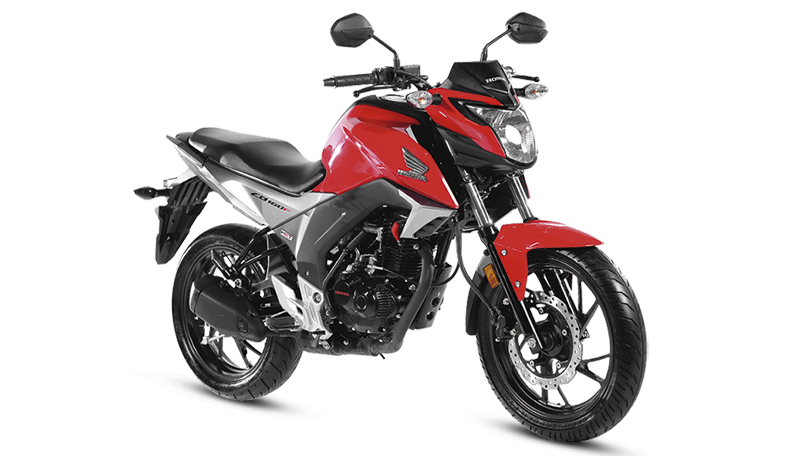

HONDA CB 160F
TIPO DE MOTOR: Motor 4 tiempos, monocilindrico.
CILINDRAJE: 162.71 cc
POTENCIA MÁXIMA: 15.06 Hp @ 8,500 Rpm
TORQUE MÁXIMO: 14.7 Nm @ 6.500 Rpm
TIPO DE ARRANQUE: Eléctrico y Pedal.
TIPO DE TRANSMISIÓN: 5 Velocidades.
RELACIÓN DE COMPRESIÓN: 10.0 a 1.
PESO EN SECO: 130 Kg.
FRENO DELANTERO: Disco.
FRENO TRASERO: Tambor.
RUEDA DELANTERA: 100/80-17
RUEDA TRASERA: 140/70-17
TIPO DE SUSPENSIÓN DELANTERA: Telescopica.
TIPO DE SUSPENSIÓN TRASERA: Monosuspensión PRO-ARM.
DIMENSIONES: 2.041 x 783 x 1.067 mm.
DISTANCIA ENTRE EJES: 1.346 mm.
COLORES: Rojo, Negro y Blanco.
CERTIFICACIÓN: EURO II.
Protegen las manos del viento, de las bajas temperaturas y de golpes con ramas, piedras u otros objetos lanzados por vehículos. Cuida las levas de freno, el clutch y el manubrio.En algunos casos hasta la farola y el depósito de combustible en caso de una caída.
Las defensas protegen la integridad de nuestra moto en caso de que suframos alguna infortunada caída porque son las encargadas de recibir el primer impacto, es decir, son la primera parte de nuestra motocicleta que toca el suelo absorbiendo el golpe inicial.
La función principal de esta pantalla es la de proteger al conductor del viento, así como también frente a otros fenómenos atmosféricos como la lluvia. La cúpula de la moto actúa como una barrera, lo que resulta muy útil en la temporada de frío.